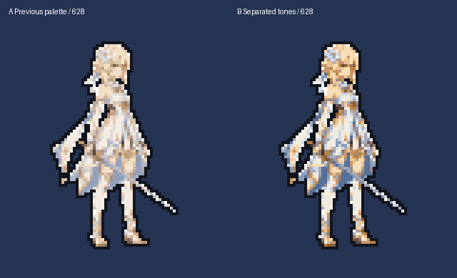

本页原图是用户最新指定的母版。停止使用大头重画稿和其行走稿。当前仅核验母版与配色，尚未替换8816游戏素材。
原仆人 canonical_fit 流程：当前旅行者身高320世界单位、固定网格4.5、统一源比例和鞋底锚点、19色（含外轮廓），得到628身体图片矩形。右边只调整色表，数量与像素位置不变；颜色观感待确认。

用户指定母版原图 · 原拟合PNG · 配色候选PNG · 拟合报告
脸部仍有细节合并；配色候选不等于最终美术通过。身体图元不包含容器与其他UI；离线检查不代表真机帧率。